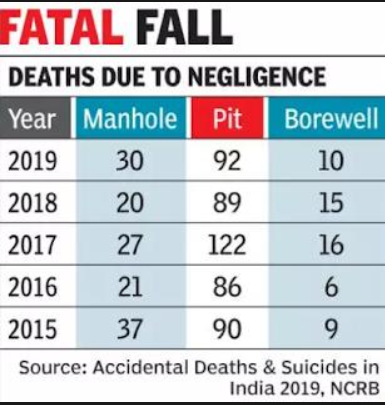
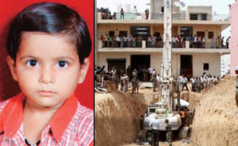

Contact us:
Contact us:
Mail:help.ziva@gmail.com or
Press here
May 11,2021
Two-year-old Sujith Wilson, who fell into an abandoned borewell in Tamil Nadu's Tiruchirappalli district on Friday, was found dead, his body decomposing, early this morning after 82 hours of non-stop rescue efforts.
Sujith fell into the borewell on Friday around 5:45 pm while playing on the family's farm. Initially, he was trapped at a depth of 26 feet but slipped to 88 feet during attempts to pull him up by tying ropes around his hands.
Although several voluntary groups, fire and rescue officials, state and national disaster relief forces, worked relentlessly from Friday evening, the government has been criticized that it missed the crucial golden hour period adopting a trial-and-error approach.
Although at least 10 lives have been lost in similar tragedies in as many years in Tamil Nadu alone, experts point out there is no standard operating procedure to handle such crises.
In 2019, 30 persons lost their lives in Gujarat after they fell into manholes. India recorded 100 such deaths last year and Gujarat accounted for 30% of national deaths, the highest in India.
Experts said that the deaths could both be the accidental fall into an open manhole or the accidental death when someone enters into the manhole for cleaning purpose.
Mahi Upadhyay probably died just hours after falling into the borewell outside her house, when she was playing with her friends after her birthday celebrations. Mahi had turned five on Wednesday, and her parents had thrown a party at this village, mostly populated by migrant workers from Uttar Pradesh and Bihar - all of whom work at various construction sites across Gurgaon.
The operation to get Mahi out of the borewell was a complicated one. After the child fell into the borewell on Wednesday night, her parents first alerted the Gurgaon police, who arrived at the spot only to realize that they weren't equipped at all to deal with the situation. Mahi had fallen into a very narrow pit, with no space for anyone else to get in and help the child.
Getting to the child took till Sunday afternoon. By that time Mahi had died. For all the days since Wednesday, the child could not be given any food, or a single drop of water. When Mahi's body was brought out from the pit, an Army jawan was holding her - she was covered in a white sheet. The body was placed in an awaiting ambulance and rushed to the nearest government hospital where doctors declared her dead on arrival.